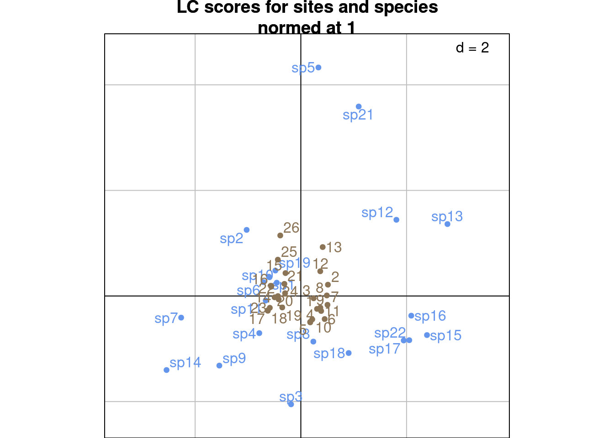
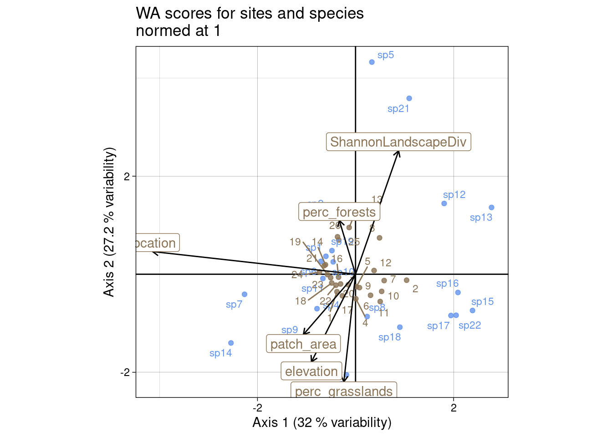
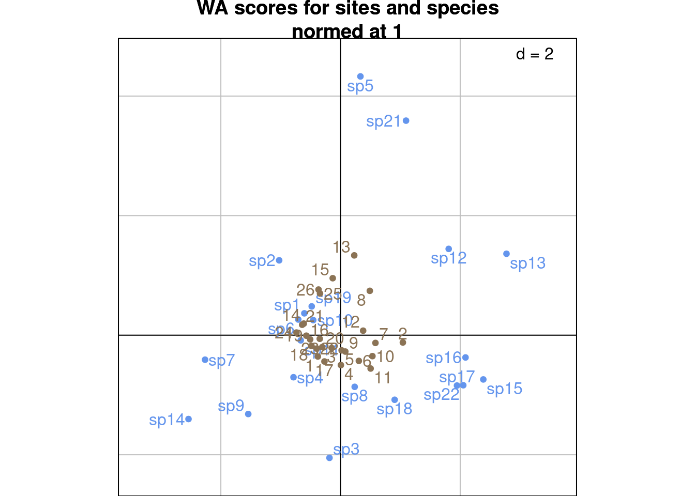
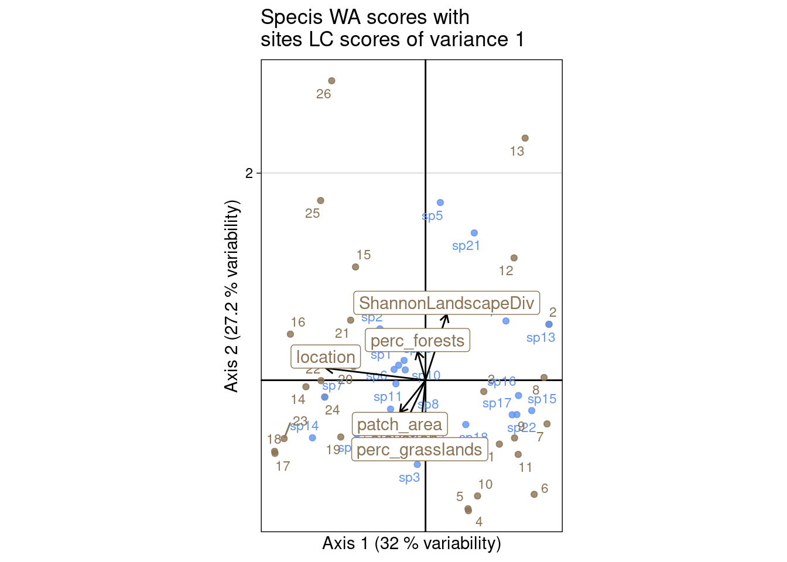
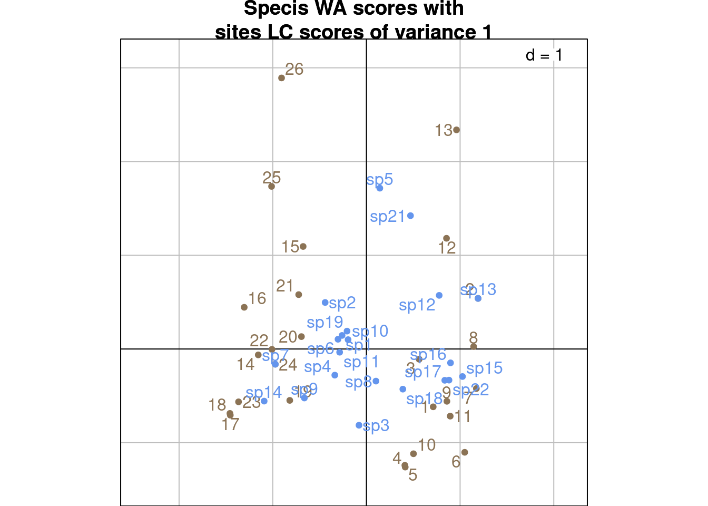
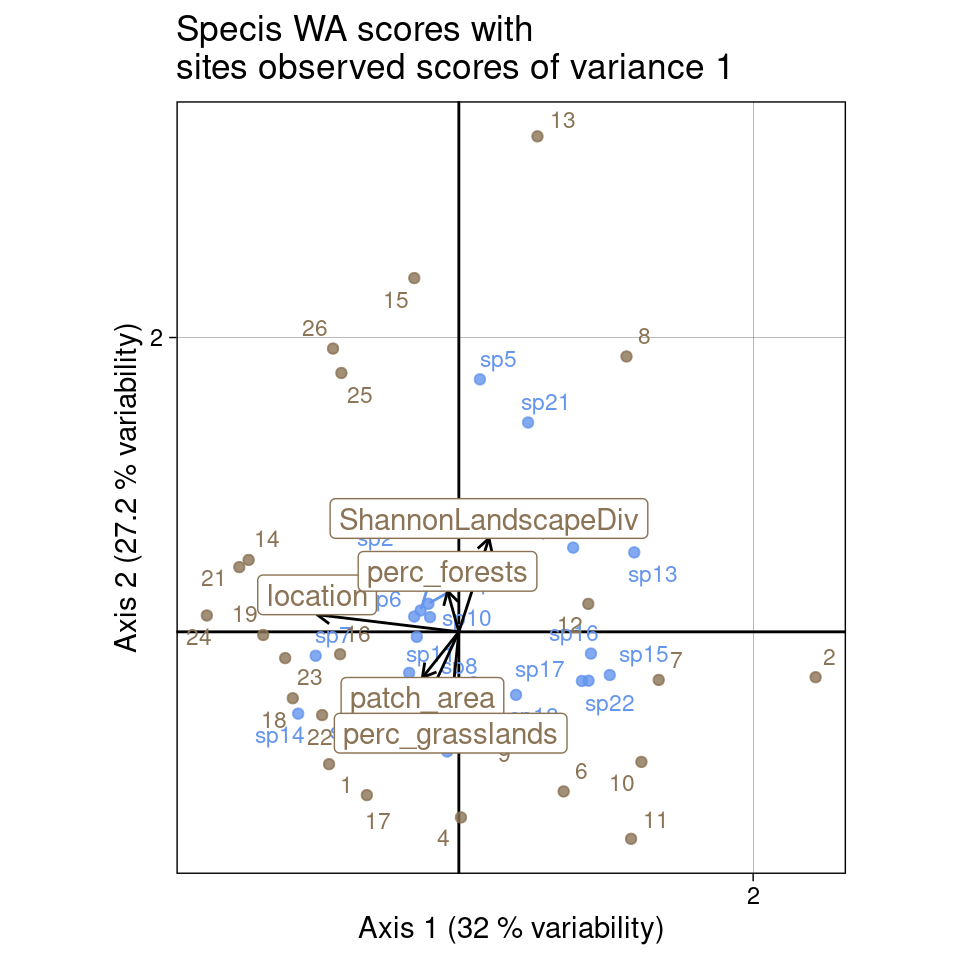
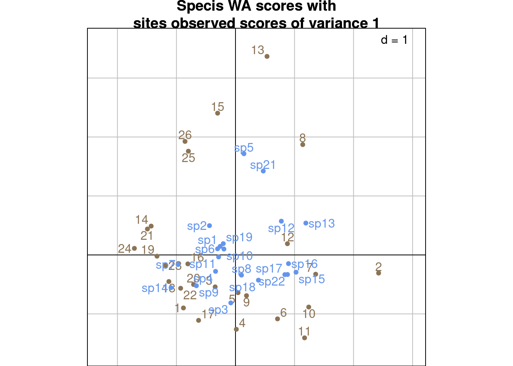
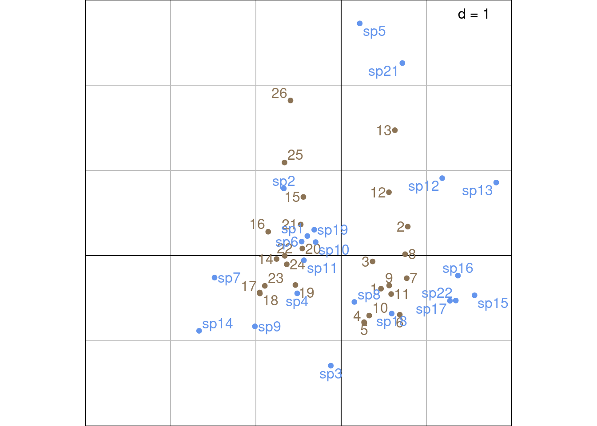

Code
# Paths
library(here)
# Multivariate analysis
library(ade4)
library(adegraphics)
# Matrix algebra
library(expm)
# Plots
library(ggplot2)
library(CAnetwork)
library(patchwork)The contents of this page relies heavily on Legendre and Legendre (2012).
CCA is a method of the family of canonical or direct gradient analyses, in which a matrix of predictor variables intervenes in the computation of the ordination vectors.
CCA is an asymmetric method because the predictor variables and the response variables are not equivalent in the analysis.
CCA takes two matrices in input:
Here, \(Y\) represents the abundance of different bird species (columns) at different sites (rows):
| sp1 | sp2 | sp3 | sp4 | sp5 | sp6 | sp7 | sp8 | sp9 | sp10 | sp11 | sp12 | sp13 | sp14 | sp15 | sp16 | sp17 | sp18 | sp19 | sp21 | sp22 |
|---|---|---|---|---|---|---|---|---|---|---|---|---|---|---|---|---|---|---|---|---|
| 1 | 0 | 1 | 1 | 0 | 1 | 0 | 2 | 0 | 1 | 1 | 0 | 0 | 0 | 0 | 0 | 0 | 0 | 1 | 0 | 0 |
| 2 | 0 | 0 | 2 | 0 | 1 | 0 | 5 | 0 | 2 | 0 | 2 | 4 | 0 | 3 | 3 | 0 | 3 | 1 | 0 | 2 |
| 5 | 0 | 0 | 2 | 0 | 1 | 0 | 2 | 0 | 1 | 2 | 0 | 0 | 0 | 0 | 0 | 0 | 3 | 2 | 0 | 1 |
| 3 | 0 | 0 | 0 | 0 | 1 | 0 | 4 | 1 | 0 | 1 | 0 | 0 | 0 | 0 | 0 | 0 | 2 | 0 | 0 | 1 |
| 5 | 0 | 0 | 1 | 0 | 1 | 0 | 2 | 0 | 0 | 3 | 0 | 0 | 0 | 0 | 1 | 0 | 3 | 1 | 0 | 1 |
| 1 | 0 | 0 | 1 | 0 | 2 | 0 | 3 | 1 | 2 | 1 | 0 | 0 | 0 | 1 | 0 | 1 | 2 | 2 | 0 | 3 |
\(E\) represents environmental variables (columns) associated to each site (rows).
| location | elevation | patch_area | perc_forests | perc_grasslands | ShannonLandscapeDiv |
|---|---|---|---|---|---|
| 0 | 10 | 6.28 | 7.7882 | 67.7785 | 0.232 |
| 0 | 30 | 7.92 | 16.4129 | 43.4066 | 0.274 |
| 0 | 430 | 83.24 | 24.4526 | 28.4995 | 0.274 |
| 0 | 420 | 140.83 | 41.9966 | 34.2412 | 0.260 |
| 0 | 400 | 140.83 | 41.9966 | 34.2412 | 0.260 |
| 0 | 500 | 0.50 | 7.5445 | 67.0780 | 0.240 |
We have a data matrix \(Y\) (\(r \times c\)) and a matrix \(E\) (\(r \times l\)) of predictors variables.
We regress \(P_0\) (“centered” \(Y\)) on \(E_{stand}\) (which is the centered and scaled \(E\) matrix):
\[ \hat{P_0} = D_r^{1/2} E_{stand}B \]
Then, we diagonalize matrix \(S_{\hat{P_0}^\top \hat{P_0}} = \hat{P_0}^\top\hat{P_0}\).
\[ S_{\hat{P_0}^\top\hat{P_0}} = V_0 \Lambda V_0^{-1} \]
The matrix \(V_0\) (\(c \times \text{mindim}\)) contains the loadings of the columns (species) of the contingency table. There are \(\text{mindim} = \min(r-1, c, l)\) non-null eigenvalues.
Then, we can find the rows (sites) observed scores \(U_0\) (\(r \times \text{mindim}\)) from the eigenvectors of the multivariate space using the following formula:
\[ U_0 = P_0 V_0 \Lambda^{-1/2} \]
Here, it is important to note that \(U_0\) contains the loadings of the sites computed from the observed data matrix \(P_0\), i.e. the latent ordination of the sites not taking into account the sites variables. The position of the sites taking into account the regression will be defined below in the scalings section.
Finally, we define the following transformations of \(U_0\) and \(V_0\) (\(V_0\) corresponds to c1):
\[ \left\{ \begin{array}{ll} U &= D_r^{-1/2} U_0\\ V &= D_c^{-1/2} V_0\\ \end{array} \right. \] This transformation is similar to the transformation applied to CA eigenvectors.
We start by “centering” the matrix \(Y\) to get \(P_0\) (just like with CA).
\[ P = Y/y_{\cdot \cdot} \]
\[ P_0 = [p_{0ij}] = \left[ \frac{p_{ij} - p_{i\cdot} p_{\cdot j}}{\sqrt{p_{i\cdot} p_{\cdot j}}} \right] \]
Here, we have:
P <- Y/sum(Y)
# Initialize P0 matrix
P0 <- matrix(ncol = ncol(Y), nrow = nrow(Y))
colnames(P0) <- colnames(Y)
rownames(P0) <- rownames(Y)
for(i in 1:nrow(Y)) { # For each row
for (j in 1:ncol(Y)) { # For each column
# Do the sum
pi_ <- sum(P[i, ])
p_j <- sum(P[, j])
# Compute the transformation
P0[i, j] <- (P[i, j] - (pi_*p_j))/sqrt(pi_*p_j)
}
}| sp1 | sp2 | sp3 | sp4 | sp5 | sp6 | sp7 | sp8 | sp9 | sp10 | sp11 | sp12 | sp13 | sp14 | sp15 | sp16 | sp17 | sp18 | sp19 | sp21 | sp22 |
|---|---|---|---|---|---|---|---|---|---|---|---|---|---|---|---|---|---|---|---|---|
| -0.0246174 | -0.0235678 | 0.1819102 | 0.0177849 | -0.0086058 | 0.0190444 | -0.0060852 | 0.0389306 | -0.0172115 | 0.0177849 | 0.0142185 | -0.0285421 | -0.0121704 | -0.0086058 | -0.0172115 | -0.0136069 | -0.0172115 | -0.0425963 | 0.0259875 | -0.0227687 | -0.0250899 |
| -0.0700532 | -0.0430288 | -0.0192431 | -0.0075494 | -0.0157119 | -0.0362309 | -0.0111100 | 0.0317935 | -0.0314238 | -0.0075494 | -0.0702658 | 0.0257394 | 0.3429284 | -0.0157119 | 0.1622254 | 0.2201063 | -0.0314238 | 0.0004761 | -0.0290665 | -0.0415698 | 0.0427538 |
| 0.0325898 | -0.0342433 | -0.0153141 | 0.0216502 | -0.0125039 | -0.0148135 | -0.0088416 | -0.0092517 | -0.0250078 | -0.0160655 | 0.0166286 | -0.0414707 | -0.0176832 | -0.0125039 | -0.0250078 | -0.0197704 | -0.0250078 | 0.0364300 | 0.0331807 | -0.0330822 | 0.0191867 |
| 0.0149125 | -0.0283250 | -0.0126673 | -0.0444862 | -0.0103428 | 0.0023441 | -0.0073135 | 0.0865729 | 0.0773724 | -0.0444862 | -0.0024017 | -0.0343033 | -0.0146270 | -0.0103428 | -0.0206857 | -0.0163535 | -0.0206857 | 0.0280484 | -0.0407198 | -0.0273646 | 0.0371130 |
| 0.0381182 | -0.0333300 | -0.0149056 | -0.0135976 | -0.0121704 | -0.0123509 | -0.0086058 | -0.0058019 | -0.0243408 | -0.0523468 | 0.0573758 | -0.0403646 | -0.0172115 | -0.0121704 | -0.0243408 | 0.0861662 | -0.0243408 | 0.0407749 | -0.0055815 | -0.0321998 | 0.0216837 |
| -0.0648859 | -0.0351329 | -0.0157119 | -0.0184176 | -0.0128287 | 0.0201080 | -0.0090713 | 0.0163368 | 0.0533995 | 0.0183431 | -0.0220164 | -0.0425480 | -0.0181425 | -0.0128287 | 0.0533995 | -0.0202840 | 0.0533995 | 0.0003888 | 0.0298152 | -0.0339416 | 0.1252960 |
We standardize \(E\) as \(E_{stand}\), but we standardize so that the variables associated to the sites which have more observations have more weight. Therefore, we standardize \(E\) with the weights \(y_{i\cdot}/r\).
| location | elevation | patch_area | perc_forests | perc_grasslands | ShannonLandscapeDiv |
|---|---|---|---|---|---|
| -0.8940191 | -1.4578384 | -0.5429520 | -1.0404731 | 1.0369741 | -1.0351817 |
| -0.8940191 | -1.3502706 | -0.5081483 | -0.3311255 | -0.4345644 | 1.0954816 |
| -0.8940191 | 0.8010856 | 1.0902771 | 0.3301082 | -1.3346326 | 1.0954816 |
| -0.8940191 | 0.7473017 | 2.3124400 | 1.7730331 | -0.9879574 | 0.3852605 |
| -0.8940191 | 0.6397339 | 2.3124400 | 1.7730331 | -0.9879574 | 0.3852605 |
| -0.8940191 | 1.1775730 | -0.6656140 | -1.0605165 | 0.9946790 | -0.6293411 |
Conceptually, it is equivalent to using the inflated matrix \(E_{infl}\) to compute its mean \(\bar{E}_{infl}\) and standard deviation \(\sigma(E_{infl})\) per column. In \(E_{infl}\), the rows corresponding to each site are duplicates as many times as there are observations for this given site (so that \(E_{infl}\) is of dimension \(y_{\cdot \cdot} \times l\)).
\[ E_{stand} = \frac{E - \bar{E}_{infl}}{\sigma(E_{infl})} \]
With our data: first, we compute \(E_{infl}\):
Einfl <- matrix(data = 0,
ncol = ncol(E),
nrow = sum(Y))
colnames(Einfl) <- colnames(E)
rownames(Einfl) <- 1:nrow(Einfl)
# Get the number of times to duplicate each site
nrep_sites <- rowSums(Y)
nrstart <- 0
for (i in 1:nrow(E)) {
ri <- as.matrix(E)[i, ]
rname <- rownames(E)[i]
# Get how many times to duplicate this site
nr <- nrep_sites[as.character(rname)]
Einfl[(nrstart+1):(nrstart+nr), ] <- matrix(rep(ri, nr),
nrow = nr,
byrow = TRUE)
rownames(Einfl)[(nrstart+1):(nrstart+nr)] <- paste(rname,
1:nr,
sep = "_")
nrstart <- nrstart + nr
}
paste("Dimension of Einfl:", paste(dim(Einfl), collapse = " "))[1] "Dimension of Einfl: 493 6"Then, we compute the mean and standard deviation per column and standardize \(E\).
After that, we perform the weighted multiple linear regression of \(P_0\) by \(E_{stand}\). \(P_0\) is approximated by \(\hat{P_0}\) using multiple linear regression on \(E_{stand}\): for each row, we can write \(\hat{p_{0i\cdot}} = b_0 + b_1 e_{1\cdot} + \ldots + b_e e_{l\cdot}\), where \(e_i\) are columns of \(E_{stand}\) and \(b_i\) are regression coefficients.
In a matrix form, it is written:
\[ \hat{P_0} = D_r^{1/2}E_{stand}B \]
Where
\[ B = [E_{stand}^\top D_r E_{stand}]^{-1}E_{stand}^\top D_r^{1/2}P_0 \]
With our example:
# Diagonal matrix weights
dr <- rowSums(P)
Dr <- diag(dr)
colnames(Dr) <- rownames(P)
# Regression coefficient
B <- solve(t(Estand) %*% Dr %*% Estand) %*% t(Estand) %*% diag(dr^(1/2)) %*% P0
# Compute predicted values
P0hat <- diag(dr^(1/2)) %*% Estand %*% B
colnames(P0hat) <- colnames(P0)
rownames(P0hat) <- rownames(P0)Now, we can get the predicted values for \(P_0\). For instance, let’s plot predicted vs observed values for site 2:
df <- data.frame(predicted = pred,
observed = obs,
names = names(pred))
df<- df |>
tidyr::pivot_longer(cols = c("predicted", "observed"),
names_to = "type")
ggplot(df, aes(x = reorder(names, value, decreasing = TRUE),
y = value, col = type, group = type)) +
geom_point() +
geom_line() +
theme_linedraw() +
ylab("Values of P0") +
xlab("Species") +
theme(axis.text.x = element_text(angle = 90, hjust = 1))Then, we diagonalize the covariance matrix of predicted values \(S_{\hat{P_0}^\top \hat{P_0}}\).
First, we compute the covariance matrix (note that here we don’t divide by the degrees of freedom).
\[ S_{\hat{P_0}^\top \hat{P_0}} = \hat{P_0}^\top \hat{P_0} \]
[1] TRUEWe diagonalize \(S_{\hat{P_0}^\top \hat{P_0}}\):
\[ S_{\hat{P_0}^\top \hat{P_0}} = V_0 \Lambda V_0^{-1} \]
\(\Lambda\) is the matrix of eigenvalues (there are \(\min(r-1, c, l)\) non-null eigenvalues) and \(V_0\) contains the columns (species) loadings.
Here, \(r-1 =\) 25, \(c =\) 21 and \(l =\) 6 so the minimum (and the number of eigenvalues) is 6.
[1] 1.846574e-01 1.571586e-01 1.009501e-01 8.711508e-02 3.222443e-02
[6] 1.476469e-02 9.276798e-18 8.416776e-18 2.476628e-18 1.422189e-18
[11] -1.212603e-18 -1.597223e-18 -1.677170e-18 -2.007096e-18 -3.488219e-18
[16] -3.614024e-18 -5.174948e-18 -5.675276e-18 -6.196745e-18 -6.258539e-18
[21] -7.334976e-18Finally, we can get the ordination of rows (sites) by projecting the observed values (matrix \(P_0\)) onto the axes defined by the diagonalization (\(V_0\)):
\[ U_0 = P_0 V_0 \Lambda^{-1/2} \]
U0 <- P0 %*% V0 %*% diag(lambda^(-1/2))
rownames(U0) <- rownames(U0)
apply(U0, 2, varfacwt, wt = rowSums(P)) # Norm?[1] 0.06513814 0.06770504 0.08019396 0.07772885 0.12867946 0.10202597The rows loadings \(U_0\) are different from the loadings obtained by diagonalizing \(S_{hat{P_0} \hat{P_0}^\top}\) or performing the SVD of \(\hat{P_0}\), because \(U_0\) does not contain the loadings of \(\hat{P_0}\) but the loadings of \(P_0\).
# This is not the same as diagonalizing S_ppt
Sppt <- P0hat %*% t(P0hat)
eig2 <- eigen(Sppt)
all(abs(eig2$vectors[,1:neig]/U0 - 1) < zero) # Eigenvectors are different[1] FALSE# We perform the SVD
sv <- svd(P0hat)
all(abs(abs(sv$u[, 1:neig]/U0) - 1) < zero) # Eigenvectors are different for U0[1] FALSE[1] TRUE# If U was computed as below (using the matrix of predicted values), it would give the same results as the diagonalization/SVD above (but it is not the case).
# Compute rows loadings differently
Uhat <- P0hat %*% V0 %*% diag(lambda^(-1/2))
all(abs(abs(Uhat/eig2$vectors[,1:neig]) - 1) < zero) # Eigenvectors are the same[1] TRUE[1] TRUEWe compute \(U\) and \(V\) as:
\[ \left\{ \begin{array}{ll} U &= D_r^{-1/2} U_0\\ V &= D_c^{-1/2} V_0\\ \end{array} \right. \]
First, we define the diagonal matrices with rows and columns weights (respectively \(D_r\) and \(D_c\)).
As with CA, we have scalings type 1, 2 and 3. There are 2 differences with CA:
Scaling type 1 (\(\alpha = 1\))
ls)li)c1)Scaling type 2 (\(\alpha = 0\))
ls1, but variance not normed to one)l1)co)Scaling type 3 (\(\alpha = 1/2\))
\(V^\star\) (columns/species) and \(U^\star\) (rows/sites) correspond to weighted averagings, and cab be computed from \(U\) (rows/sites) (resp. \(V\) (columns/species)). See Equation 1 and Equation 2 below.
How to find the fa (i.e. correlation coefficients for each environmental variable in the multivariate space)??
Let’s compute CCA with ade4 to compare results.
ca <- dudi.coa(Y,
nf = c-1,
scannf = FALSE)
cca <- pcaiv(dudi = ca,
df = E,
scannf = FALSE,
nf = neig)
lambda[1:neig]/cca$eig # Eigenvalues are the same as computed manually[1] 1 1 1 1 1 1The scores for the explanatory variables are computed from matrix \(Z_{stand}\): so we first need to standardize \(Z\) into \(Z_{stand}\) (the computation can involve \(Z_1\), \(Z_2\) or \(Z_3\) (defined below) and give the same result).
\(Z_1\), \(Z_2\) or \(Z_3\) are defined as some variation of:
\[Z_i = D_r^{-1/2} \hat{P}_0 V_0 \Lambda^\alpha\] where \(\alpha\) is an exponent equal to 0, -1/2 or -1/4. This equation corresponds to the projection of the predicted data matrix \(\hat{P}_0\) onto the multivariate space.
[1] 0.17463933 0.17429419 0.09984546 0.08291203 0.03437735 0.01521229It is the same as computing with the inflated matrix (below):
# Compute inflated matrix ------
Zinfl <- matrix(data = 0,
ncol = ncol(Z1),
nrow = sum(Y))
rownames(Zinfl) <- 1:nrow(Zinfl)
# Give names to Z1
rownames(Z1) <- rownames(Y)
# Get the number of times to duplicate each site
nrep_sites <- rowSums(Y)
nrstart <- 0
for (i in 1:nrow(Z1)) {
ri <- Z1[i, ]
rname <- rownames(Z1)[i]
# Get how many times to duplicate this site
nr <- nrep_sites[as.character(rname)]
Zinfl[(nrstart+1):(nrstart+nr), ] <- matrix(rep(ri, nr),
nrow = nr,
byrow = TRUE)
rownames(Zinfl)[(nrstart+1):(nrstart+nr)] <- paste(rname,
1:nr,
sep = "_")
nrstart <- nrstart + nr
}
# Compute mean/sd ------
Zinfl_mean <- apply(Zinfl, 2, mean)
n <- nrow(Zinfl)
Zinfl_sd <- apply(Zinfl, 2,
function(x) sd(x)*sqrt((n-1)/n))
# Compute Zstand ------
Zstand2 <- scale(Z1,
center = Zinfl_mean,
scale = Zinfl_sd)
all(abs(Zstand2/Zstand - 1) < zero)[1] TRUEHere, \(\chi^2\) distances between rows (sites) are preserved they are positioned at the centroid of species.
ls) or by predicted positions \(Z_1 = D_r^{-1/2} \hat{P_0} V_0\) (li)c1)If we compare to the results obtained with ade4, we can see what each score corresponds to.
[1] TRUE[1] TRUE[1] TRUE# What does the BS1 correspond to?
res <- as.matrix(cca$cor)/(BS1 %*% diag(lambda^(-1/2)) )
all(abs(abs(res) - 1) < zero)[1] TRUEWe know that \(V\)/c1 is of variance 1 (computed above). Below we show that \(Z_1\)/li is of variance \(\lambda\) and try to get the variance of \(U^\star\)/ls.
1 2 3 4 5 6 7
0.05273834 0.05273834 0.05273834 0.05273834 0.05273834 0.05273834 0.05273834
8 9 10 11 12 13 14
0.05273834 0.05273834 0.05273834 0.05273834 0.05273834 0.05273834 0.05273834
15 16 17 18 19 20 21
0.05273834 0.05273834 0.05273834 0.05273834 0.05273834 0.05273834 0.05273834
22 23 24 25 26
0.05273834 0.05273834 0.05273834 0.05273834 0.05273834 sp1 sp2 sp3 sp4 sp5 sp6 sp7
0.04259635 0.04259635 0.04259635 0.04259635 0.04259635 0.04259635 0.04259635
sp8 sp9 sp10 sp11 sp12 sp13 sp14
0.04259635 0.04259635 0.04259635 0.04259635 0.04259635 0.04259635 0.04259635
sp15 sp16 sp17 sp18 sp19 sp21 sp22
0.04259635 0.04259635 0.04259635 0.04259635 0.04259635 0.04259635 0.04259635 [1] 1 1 1 1 1 1[1] 0.24702157 0.22874662 0.15097579 0.15129471 0.09999697 0.03937424Similarly to the CA case, \(U^\star\) (sites coordinates) can be obtained from species coordinates, weighted by the observed data matrix:
\[ U^\star = \left\{ \begin{array}{ll} D_r^{-1/2} P_0 V_0 \qquad &\text{(from } V_0 \text{)}\\ D_r^{-1/2} P_0 D_c^{1/2} V \qquad &\text{(from } V \text{)}\\ D_r^{-1} P V \qquad &\text{(from } V \text{ and } P \text{)}\\ \end{array} \right. \tag{1}\]
# With V0
Ustar_wa <- diag(dr^(-1/2)) %*% P0 %*% V0
res <- Ustar_wa/Ustar
all(res[, 1:neig] - 1 < zero)[1] TRUE# With V
Ustar_wa_V <- diag(dr^(-1/2)) %*% P0 %*% diag(dc^(1/2)) %*% V
res <- Ustar_wa_V/Ustar
all(res[, 1:neig] - 1 < zero)[1] TRUE# With V and P
Ustar_wa_legendre <- diag(dr^(-1)) %*% P %*% V
res <- Ustar_wa_legendre/Ustar
all(res[, 1:neig] - 1 < zero)[1] TRUEIn these plots, we use \(V\)/c1 for species coordinates.
For sites, we can plot the predicted scores for sites (LC scores = \(Z_1\)/li):
mult <- 10
# LC scores
multiplot(indiv_row = Z1, indiv_col = V,
indiv_row_lab = rownames(Y), indiv_col_lab = colnames(Y),
var_row = BS1, var_row_lab = colnames(E),
row_color = params$colsite, col_color = params$colspp,
mult = mult,
eig = lambda) +
ggtitle("LC scores for sites and species\nnormed at 1")s.label(cca$c1, # Species constrained at variance 1
plabels.optim = TRUE,
plabels.col = params$colspp,
ppoints.col = params$colspp,
main = "LC scores for sites and species\nnormed at 1")
s.label(cca$li, # Predicted sites scores
plabels.optim = TRUE,
plabels.col = params$colsite,
ppoints.col = params$colsite,
add = TRUE)
We can also plot the WA scores for sites (\(U^\star\)/ls):

s.label(cca$c1, # Species constrained at variance 1
plabels.optim = TRUE,
plabels.col = params$colspp,
ppoints.col = params$colspp,
main = "WA scores for sites and species\nnormed at 1")
s.label(cca$ls, # WA sites scores
plabels.optim = TRUE,
plabels.col = params$colsite,
ppoints.col = params$colsite,
add = TRUE)
Here, \(\chi^2\) distances between columns (species) are preserved they are positioned at the centroid of sites.
l1) (predicted sites scores)co) (WA scores from sites latent ordination)If we compare to the results obtained with ade4, we can see what each score corresponds to.
[1] TRUE# U is not computed by ade4 so we compute it from ls (corresponding to Ustar)
ls1_ade4 <- as.matrix(cca$ls) %*% diag(lambda^(-1/2))
all(abs(abs(ls1_ade4/U) - 1) < zero)[1] TRUE[1] TRUE[1] TRUEBelow we show that \(V^\star\)/co is of variance \(\lambda\), \(Z_2\)/l1 is of variance 1 and try to get the variance of \(U\)/ls1.
[1] 1 1 1 1 1 1[1] 1 1 1 1 1 1[1] 1.337729 1.455514 1.495549 1.736722 3.103141 2.666784\(V^\star\) (species coordinates) can be obtained from sites coordinates, weighted by the predicted data matrix. Contrary to the CA case, sites coordinates are not weighted by \(P_0\) (observed) but by \(\hat{P}_0\) (predicted):
\[ V^\star = \left\{ \begin{array}{ll} D_c^{-1/2} \hat{P}_0^\top U_0 \qquad &\text{(from } U_0 \text{)}\\ D_c^{-1/2} \hat{P}_0^\top D_r^{1/2} U \qquad &\text{(from } U \text{)} \end{array} \right. \tag{2}\]
# U0
Vstar_wa <- diag(dc^(-1/2)) %*% t(P0hat) %*% U0
res <- Vstar_wa/Vstar
all(res[, 1:neig] - 1 < zero)[1] TRUE# U
Vstar_wa_U <- diag(dc^(-1/2)) %*% t(P0hat) %*% diag(dr^(1/2)) %*% U
res <- Vstar_wa_U/Vstar
all(res[, 1:neig] - 1 < zero)[1] TRUE# Tests with score Z2
Vstar_wa_Z <- diag(dc^(-1)) %*% t(P) %*% Z2
res <- Vstar_wa_Z/Vstar
all(res[, 1:neig] - 1 < zero)[1] TRUEIn these plots, we always use WA scores (\(V^\star\)/co) for the columns.
We can plot the columns WA scores (\(V^\star\)/co) with the predicted scores for sites (LC scores) (\(Z_2\)/l1):
mult <- 1
# LC scores
multiplot(indiv_row = Z2, indiv_col = Vstar,
indiv_row_lab = rownames(Y), indiv_col_lab = colnames(Y),
var_row = BS2, var_row_lab = colnames(E),
row_color = params$colsite, col_color = params$colspp,
mult = mult,
eig = lambda) +
ggtitle("Specis WA scores with\nsites LC scores of variance 1")
s.label(cca$l1, # Predicted sites scores of variance 1
plabels.optim = TRUE,
plabels.col = params$colsite,
ppoints.col = params$colsite,
main = "Specis WA scores with\nsites LC scores of variance 1")
s.label(cca$co, # Species WA
plabels.optim = TRUE,
plabels.col = params$colspp,
ppoints.col = params$colspp,
add = TRUE)
We can also plot columns WA scores (\(V^\star\)/co) with the sites observed scores (\(U\)/“ls1” (not computed by ade4)):
# WA scores
multiplot(indiv_row = U, indiv_col = Vstar,
indiv_row_lab = rownames(Y), indiv_col_lab = colnames(Y),
var_row = BS2, var_row_lab = colnames(E),
row_color = params$colsite, col_color = params$colspp,
mult = mult,
eig = lambda) +
ggtitle("Specis WA scores with\nsites observed scores of variance 1")
ade4 does not compute the sites observed scores normed at 1 (corresponding to \(U\)), so we compute them as \(\text{ls1} = \text{ls} \Lambda^{-1/2}\):
[,1] [,2] [,3] [,4] [,5] [,6]
1 -0.88194233 -0.89920813 -0.21510290 -0.75716763 -3.36433191 5.943824594
2 2.42444621 -0.30829774 -3.35321943 0.55963296 2.02916596 2.065563431
3 -0.34444473 -0.54181178 -0.08013664 0.57546029 -0.80398947 0.006814482
4 0.01419785 -1.26123684 1.34364884 1.79619359 1.59088842 1.764336111
5 0.04325107 -0.64051246 0.03049116 1.11682527 -0.74470162 1.355608210
6 0.71217106 -1.08445507 0.05021373 0.26782893 0.82751939 -1.185111342
7 1.35808644 -0.32688745 1.36849015 -0.06717237 1.40265285 -1.169991512
8 1.13927090 1.87131126 0.51489605 1.22937814 -1.90204431 -1.972136233
9 0.18631749 -0.69064739 1.56174573 0.49605602 -1.54800058 -1.044143121
10 1.24074453 -0.88393142 1.11709208 -1.88081630 -1.87523745 0.694839896
11 1.17040343 -1.40649896 -1.45445191 0.15749382 -0.70665751 -1.226713778
12 0.87979967 0.19023028 1.61346288 -0.66352718 -0.77675967 -1.410272996
13 0.53426380 3.36712361 1.01348658 -1.59561837 1.77100897 1.536210292
14 -1.42844996 0.48874250 -0.51552864 0.83759576 -1.39780352 -0.793502333
15 -0.30279177 2.40395635 -0.90288926 -0.17353516 3.64804877 0.066157822
16 -0.80715875 -0.15220790 -0.00359762 1.08059321 0.72058755 2.171252757
17 -0.62521546 -1.10958406 0.42720293 0.71161391 -0.28552526 2.455843219
18 -1.12871615 -0.45121491 0.52408704 1.79661165 -0.46072861 0.013919785
19 -1.32962334 -0.02131165 0.22268095 -1.76305566 2.21983155 -0.645198949
20 -0.71010429 -0.50179403 0.79488259 1.57807386 1.63438894 -2.298299831
21 -1.49191348 0.43981741 -0.22249008 1.27068234 -1.31901558 -0.764324772
22 -0.92914770 -0.56566757 0.17354832 0.51597625 0.01408031 -0.288080450
23 -1.18010511 -0.17836577 -0.02322108 -2.68084807 3.05668242 0.997011359
24 -1.71254285 0.11121758 -1.76025623 -2.07277698 -1.45573752 -2.393217624
25 -0.79823857 1.75933428 -0.09999050 0.83358035 -3.48847449 -0.953485788
26 -0.85502843 1.92516632 0.29281684 1.85795073 -2.41935625 -0.211052481s.label(ls1_ade4, # Sites WA scores U
plabels.optim = TRUE,
plabels.col = params$colsite,
ppoints.col = params$colsite,
main = "Specis WA scores with\nsites observed scores of variance 1")
s.label(cca$co, # Species WA
plabels.optim = TRUE,
plabels.col = params$colspp,
ppoints.col = params$colspp,
add = TRUE)
This type of scaling is a compromise between scalings type 1 and 2.
The corresponding ade4 values are not computed, but we can compute them:
s.label(Z3_ade4,
plabels.optim = TRUE,
xlim = c(-3, 2),
ylim = c(-2, 3),
plabels.col = params$colsite,
ppoints.col = params$colsite)
s.label(S3_ade4,
plabels.optim = TRUE,
plabels.col = params$colspp,
ppoints.col = params$colspp,
add = TRUE)
In CCA, each ordination axis corresponds to a linear combination of the explanatory variables that maximizes the explained variance in the response data.
This analysis constrains rows (sites) scores to be linear combinations of the environmental variables (scaling \(Z_i\)).
Species can be ordered along environmental variables axes by projecting species coordinates on the vector of this variable. This gives species niche optimum, but there are strong assumptions:
The part of variation explained by the environmental variables can be computed as
\[ \frac{\sum_k \lambda_k(CCA)}{\sum_l \lambda_l(CA)} \]
Here, the environmental variables explain 38 % of the total variation.
Warning: in CCA, using noisy or not relevant explanatory variables leads to spurious relationships.
In order to examinate residuals, a CA can be performed on the table of residuals \(P_{\text{res}}\):
\[ P_{\text{res}} = P_0 - \hat{P}_0 \]
It is possible to test the significance of the the relationship between \(E\) and \(Y\) with a permutation test.